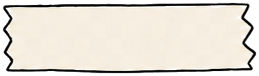
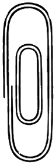
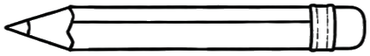
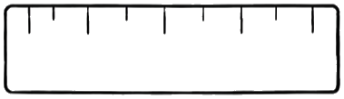
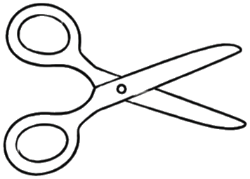
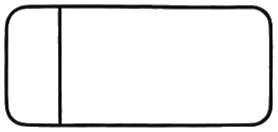

Fred Yang ·
杨
← 回到桌面 back to the desk
on the board · 6 件
在造
。
代码、视频、文章——钉法一样，长相各异
✦
图钉色 = 类型 ·
●
repo
●
tool
●
talk
◌
exp（未定稿）
RAG 是个谎言
[writeup] · [placeholder]
渡り鳥 Watari
[repo] · [placeholder]
教 agent 报税
[video] · [placeholder]
旧照片修复
[tool] · [placeholder]
分享：部署 agent
[talk] · [placeholder]
本地记忆层
[exp] · [placeholder]






fig.05 — the board, as of today